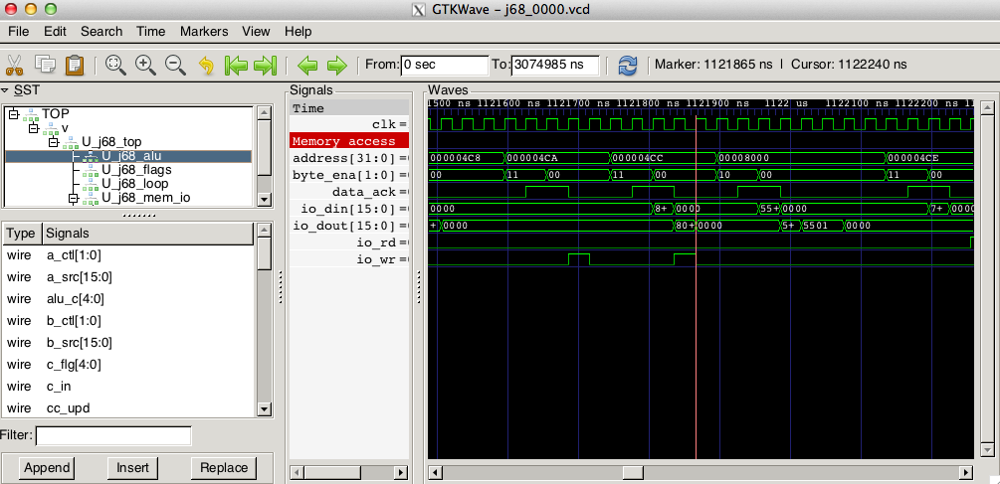

Grégory Estrade - @Torlus sur Twitter, GitHub.
Frédéric Requin.
Reverse-engineering de l'Atari Jaguar.
Réalisation d'un core Amiga 500.
Carte d'extension (I/O) pour l'Altera NDK - Stratix-II Edition.
///////////////////////////////////////
// 0000.000000.xxxxxx : ORI.B opcode //
///////////////////////////////////////
Op_ORIB:
LDW (PC)+ // Read immediate value
CALL EA1_Read_B // Read byte from effective address
ORB. // OR it with the immediate value
FLAG -**00,CIN=CLR // Update N and Z, clear V and C
JUMP EA1_Update_B // Write back resultDéclaration en Verilog
module j68_soc
(
input rst_n,
input clk,
input uart_rxd,
input uart_cts_n,
input uart_dcd_n,
output uart_txd,
output uart_rts_n,
...
);Compilation
verilator $TOP_FILE.v $COMPILE_OPT $TRACE_OPT -top-module $TOP_FILE -exe $CPP_FILES
cd ./obj_dir
make -j -f V$TOP_FILE.mk V$TOP_FILE
cd ..Instantiation du modèle
int main(int argc, char **argv, char **env)
{
...
Verilated::commandArgs(argc, argv);
Vj68_soc* top = new Vj68_soc;
...
while (tb_sstep < NUM_STEPS)
{
top->rst_n = (tb_sstep < (vluint64_t)24) ? 0 : 1;
top->clk = top->clk ^ 1;
top->eval();
if (Verilated::gotFinish()) break;
}
top->final();
...
}Ajout de traces
#if VM_TRACE
// Init VCD trace dump
Verilated::traceEverOn(true);
VerilatedVcdC* tfp = new VerilatedVcdC;
top->trace(tfp, 99);
tfp->spTrace()->set_time_resolution("1 ps");
tfp->open(file_name);
#endif
...
while (tb_sstep < NUM_STEPS)
{
...
top->eval();
#if VM_TRACE
tfp->dump(tb_time);
#endif
}Visualisation des traces avec GTKWave
Testbench/Simulation en Verilog
// Inferred block RAM
reg [15:0] r_mem_blk [0:(1 << ADDR_WIDTH) - 1];
reg [15:0] r_q;
// Read / write
always@(posedge clock) begin
r_q <= r_mem_blk[address][15:0];
if (wren) begin
if (byteena[0]) r_mem_blk[address][7:0] <= data[7:0];
if (byteena[1]) r_mem_blk[address][15:8] <= data[15:8];
end
end
assign q = r_q;Testbench/Simulation en C++ (1/2)
// Constructor
CART::CART(int w, bool debug, int size)
// Destructor
CART::~CART()
// Binary file loading
void CART::load(const char *name, vluint32_t begin, vluint32_t end)
// Cycle evaluate
void CART::eval(
vluint64_t cycle, vluint8_t clk, // Cycle counter, clock
vluint8_t ce_n, vluint8_t oe_n, // Control signals
vluint32_t a, // Address
vluint32_t &q, vluint8_t &oe // Outputs: data, output enable
)
Testbench/Simulation en C++ (2/2)
if (!clk) return;
a &= 0x7fffff;
switch(width) {
case 1: // 16 bits
a &= ~1;
q = (mem_array[a] << 8) | mem_array[a + 1];
break;
case 2: // 32 bits
a &= ~3;
q = (mem_array[a] << 24) | (mem_array[a + 1] << 16)
| (mem_array[a + 2] << 8) | (mem_array[a + 3] << 0);
break;
default:
q = mem_array[a];
}
oe = (!ce_n && !(oe_n & 1)) ? 1 : 0;
oe |= (!ce_n && !(oe_n & 2)) ? 2 : 0;(System)Verilog DPI - Direct Programming Interface
Déclaration
import "DPI-C" function void dpi_trace_init();
import "DPI-C" function dpi_trace_fetch(
input integer sr,
input integer pc,
input integer usp,
input integer ssp,
input integer lvl
);Utilisation
always@(posedge clk)
begin
// Instruction fetch
if (w_dbg_ifetch)
dpi_trace_fetch({16'd0, w_dbg_sr_reg}, w_dbg_pc_reg, w_dbg_usp_reg,
w_dbg_ssp_reg, {29'd0, w_dbg_irq_lvl});
...
end
Utilisation du désassembleur
#include "svdpi.h"
#ifdef __cplusplus
extern "C" {
#endif
#include "musashi/m68k.h"
void dpi_trace_fetch(int sr, int pc, int usp, int ssp, int lvl)
{
...
m68k_disassemble(dis_buff, prev_pc, M68K_CPU_TYPE_68010);
fprintf(fh_j, "PC=%08lX %s\n", prev_pc, dis_buff);
fprintf(fh_j, "D0=%08X %08X %08X %08X %08X %08X %08X %08X \n",
regs[0], regs[1], regs[2], regs[3], regs[4], regs[5],
regs[6], regs[7]);
...
}
Exécution conjointe
reg = m68k_get_reg((void *)NULL, M68K_REG_PC);
m68k_disassemble(dis_buff, reg, M68K_CPU_TYPE_68010);
fprintf(fh_m, "PC=%08lX %s\n", reg, dis_buff);
/* Musashi call */
m68k_execute(1);
/* Dump registers */
fprintf(fh_m, "D0=");
for (i = (int)M68K_REG_D0; i <= (int)M68K_REG_D7; i++)
{
reg = m68k_get_reg((void *)NULL, (m68k_register_t)i);
fprintf(fh_m, "%08lX ", reg);
}
Exemple de traces produites
PC=000002F0 movea.l A0,A1
D0=11552299 33774401 00000000 00000000 00000000 00000000 00000000 00000000
A0=00008004 00008004 00000000 00000000 00000000 00000000 00000000 0000FFFC
USP=00000000 SSP=0000FFFC SR=2710 XNZVC=10000
PC=000002F2 move.l #$09010101,(A1)+
D0=11552299 33774401 00000000 00000000 00000000 00000000 00000000 00000000
A0=00008004 00008008 00000000 00000000 00000000 00000000 00000000 0000FFFC
USP=00000000 SSP=0000FFFC SR=2710 XNZVC=10000
PC=000002F8 abcd -(A0),-(A1)
D0=11552299 33774401 00000000 00000000 00000000 00000000 00000000 00000000
A0=00008003 00008007 00000000 00000000 00000000 00000000 00000000 0000FFFC
USP=00000000 SSP=0000FFFC SR=2711 XNZVC=10001
Grégory Estrade - @Torlus sur Twitter, GitHub.
Frédéric Requin.